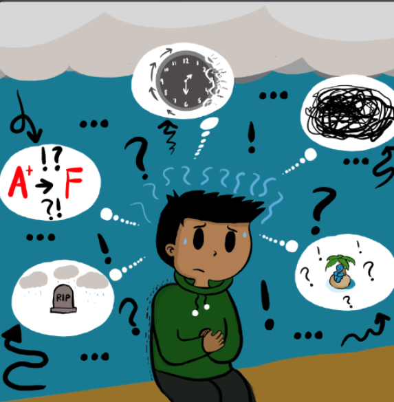
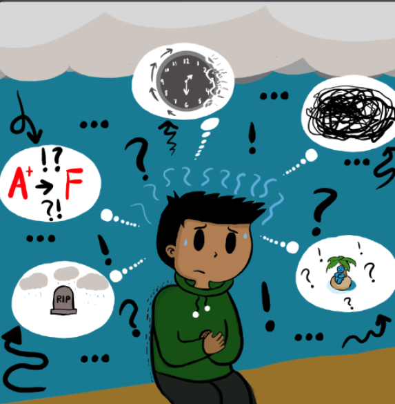

|
 |
 |
 |
About Me!
Here are a few things about me. I am a student at the University of Rhode Island.
I am a freshman here at URI, I am double majoring in Computer Science and German. I love learning new things about computers.
I think I will love learning about coding because I've coded before such as learning the basics of C/C++.
Ever since elementary school up until high school, I've played around with block coding, code.org, scratch, etc.
I've always wanted to create video games and recently in my last two years of high school, I was interested in relearning coding.
 

My Hobbies:
I love to play video games with my friends. Whether it be Minecraft, Roblox, Valorant, and other Steam games. I also love to draw digitally because it relieves my stress.
I am currently making a Roblox game with my girlfriend and my friends that have story/horror aspects.
I am learning Lua for the Roblox scripting and I am also relearning how to 3D Model.
As I have mentioned above, I've always been interested in making a game. My teacher in 5th grade announced that we will be making games using a website called Code.org.
I was thrilled and excited to create a game with a story behind it. Although it took years to understand that this might be something I was to major in college because I always thought about engineering as my goal.
But I quickly learned that I loved learning about coding and I want to pursue it in college.